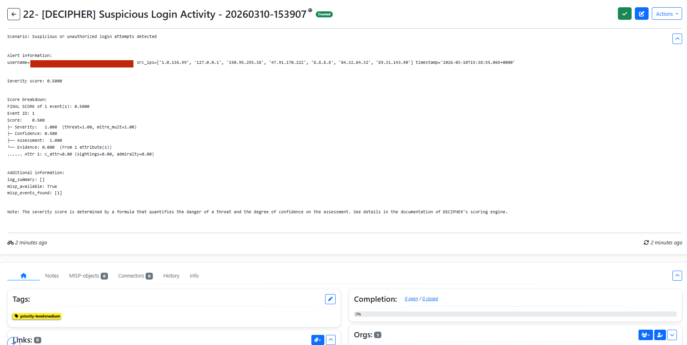

From alert to response, with threat intelligence in the loop
RADAR detects with signature rules and with its own anomaly detectors, built on Random Cut Forest (RCF). It combines the two into a scored, tiered response. DECIPHER, part of SATRAP-DL, adds MISP threat intelligence to that score and opens the Flowintel case.
Present with ← → or Page Up Page Down. Slides marked Technical go deeper and can be skipped with the switch at the top.
Two kinds of detection, one decision
RADAR ships signature rules for Wazuh and anomaly detectors that learn each host's or user's normal behaviour. Both end up as Wazuh alerts, and RADAR decides how serious each one is and what to do. DECIPHER adds what the threat-intelligence community knows about the indicators, then records the incident.
allow_mitigation: true. SONAR runs as a separate process
and can push anomaly events to Wazuh, but it is not yet integrated with RADAR.
RADAR scenarios by kind of detection
Hover a scenario for its weights, detectors and DECIPHER endpoint. Hybrid scenarios combine both kinds through fusion.
Signatures catch what is known, RCF detectors catch what is unusual, and fusion lets the two support each other.
Everything as code
Every detector, rule and response setting is a file in the repository, and deploying a scenario applies those files. The RADAR GUI edits the same files, so it never drifts from them.
| What | Defined in | Applied by |
|---|---|---|
| Decoders, signature rules, active-response bindings | radar/scenarios/ (XML) | radar.sh build |
| Anomaly detectors, features, monitors | radar/config.yaml | radar.sh run |
| Off-hours schedules and modes | radar/config.yaml | radar.sh run |
| Risk weights, tiers, mitigations, fusion | ar.yaml | scenario deploy, or the GUI |
| Agent collection and groups | radar/scenarios/agent_configs/ | bootstrap-agent.sh |
Anomaly detectors in the shipped config
RCF detectors run in the OpenSearch Anomaly Detection plugin. Their alerting monitors post to RADAR's webhook, which writes alert lines that Wazuh decodes and matches like any other log. Off-hours rule mode needs no model, so its alerts carry a fixed grade and confidence of 1.0.
The RADAR–DECIPHER contract
Three HTTP calls, all from RADAR's active-response script on the manager. Connection settings come from the RADAR GUI's Connectors page.
| Call | When | What comes back | If it fails |
|---|---|---|---|
GET /health |
On each alert, before analyze and before opening a case | Reachability | Skip CTI and case; continue with T = 0 |
| On each alert of | severity → T, matching MISP events, log summary, identified scanners |
Error logged; T = 0, no case from analyze | |
POST /api/v1/incident |
When the decision reaches tier 1 or above | Flowintel case ID and link, used in the email | Error logged; email sent without a link |
DECIPHER_BASE_URL, DECIPHER_VERIFY_SSL, DECIPHER_TIMEOUT_SEC.
One alert, end to end
A failed-login burst for trent in the hybrid
suspicious_login scenario, followed through RADAR's MAPE-K loop. Switch
DECIPHER off, or turn mitigation off, to see how the outcome changes.
Losing DECIPHER lowers the score, but never stops the pipeline.
When something fails, the score degrades, not the pipeline
Each failure has one defined effect, and none of them waits on another system.
| Condition | What RADAR does | Effect |
|---|---|---|
| No scenario matches the rule | Logs and exits | No decision |
| Anomaly alert not from the webhook's log on the webhook agent | Exits before scoring | Forged anomaly alerts cannot trigger a response or be fused |
| DECIPHER health check fails | Skips analyze and case creation | T = 0; email still sent |
| Analyze errors, or no endpoint for the scenario | Logs a warning or error | T = 0 |
| Fusion lookup fails, or finds no counterpart | Scores the alert on its own | Exactly the single-alert score; fusion can only raise a term |
R below tier1_min | Logs the decision | Tier 0: no email, no case |
allow_mitigation: false | Plans, then withholds | Logged with withheld_reason |
What decides the response
Three kinds of evidence, each from 0 to 1: how unusual the behaviour is (A), how bad the matched signature is (S) and what threat intelligence says (T). Each scenario weighs them differently and draws its own tier lines.
The same evidence can mean different actions in different scenarios. That is configuration, not code.
Where A, S and T come from
R = wA·A + wS·S + wT·T
- A = grade × confidence from RADAR's RCF detector, or a fixed grade and confidence (1.0 by default) from an off-hours rule-mode alert. Only anomaly alerts carry it.
- S = likelihood × impact, set per rule ID or rule group in
ar.yaml. Only signature alerts carry it. - T = DECIPHER
severity, clamped to 0–1. - Fusion fills the term an alert cannot carry from the strongest recent alert of the other kind on the same user or host, discounted linearly over time. It takes the larger value and never adds.
- Tiers: below
tier1_min→ 0, belowtier1_max→ 1, belowtier2_max→ 2, else 3.
See the fusion section of the product page for the time-decay curve.
| Scenario | Kind | wA | wS | wT | Tier lines | DECIPHER |
|---|
Generated from ar.yaml. "Possible" means the scenario gives T a weight but no
analyze endpoint is wired yet. "Hybrid" here means a scenario with both signature and anomaly
rules. A single alert is scored as hybrid only when one rule ID sits on both sides,
which no shipped scenario does.
What DECIPHER adds: the CTI score T
T expresses how severe a threat is together with how confident we can be in that judgement. DECIPHER computes it over the MISP events that match the alert, using each event's own data and its attributes.
What drives T
Select a factor for what it measures.
What T does to suspicious_login
Intelligence from outside the network can raise a response, but on its own it cannot trigger the strongest one.
Analyze request and response
Request, suspicious_login
// POST /api/v1/analyze/suspicious_login
{
"title": "RADAR: suspicious login attempts",
"username": "trent", // alert's own user fields first
"target_host": "srv-01",
"src_ips": ["203.0.113.45"], // from context IOCs
"timestamp": "2026-11-23T02:14:07Z"
}Request, scanning_detection
// POST /api/v1/analyze/suspicious_nt_scanning
{ "src_ip": [...], "uri": [...], "user_agents": [...],
"http_method": ..., "target_host": ..., "timestamp": ...,
"detection_chain": [[rule_id, description], ...] }Response fields RADAR reads
{
"severity": 0.56, // becomes T, clamped to 0–1
"report": {
"log_summary": [...], // labels for the email
"misp_events_found": [...], // copied into the case
"identified-scanners": [...] // scanning only
},
"created_case": { "id": ..., "link": ... }
}From tier to action
Every tier above 0 leaves a trace an analyst can follow. Containment starts at tier 2, and only where it is switched on.
| Tier | Risk R | Flowintel case | suspicious_login mitigation |
|---|

What a case carries
// POST /api/v1/incident
{
"priority_level": "priority-level:high",
"title": "...",
"description": {
"source": "RADAR",
"decision_id": "...", // same ID in log, email, case
"scenario": { "name", "detection_type" },
"agent": { "id", "name" },
"alert": { "id", "rule_id", "rule_level", "rule_description", "rule_groups" },
"risk": { "score", "tier", "components": {
"anomaly_intensity_A", "anomaly_grade_G", "anomaly_confidence_C",
"signature_risk_S", "signature_likelihood_L", "signature_impact_I",
"cti_score_T", ... } },
"misp_events": [...],
"identified_scanners": [...],
"iocs": { "ip", "user", "domain", "hash", "service", "asn", "country", "agent" },
"extras": { "fusion": {...}, ... }
}
}Why it is shaped this way
- The full score breakdown lets an analyst see which evidence drove the tier without opening RADAR's logs.
- When fusion contributed, the counterpart alert is in
extras.fusion, so the case shows both alerts. - The decision ID ties the case to the active-response log and the email.
- Tier maps to priority: 1 → low, 2 → medium, 3 → high.
Who can be blocked
A wrong block hurts more than a missed one. Every target passes four gates, and anything RADAR is unsure about is declined.
Context and threat intelligence can raise the score. Only the alert itself decides who is acted on.
Guards in detail
Targets
firewall-droptakes the alert's own source IP. With none, it refuses withno_alert_source_ip.lock_user_linux.shtakes the alert's own user fields.rootandprotected_usersare skipped.terminate_service.shreads service names from context, bounded by theterminable_servicesallowlist on both manager and agent.
never_block and allowlists
- Built in: .
- Added at run time: the manager, OpenSearch and Wazuh API addresses, plus
global.never_block. - The scanning allowlist is a Wazuh CDB list. If it cannot be read, RADAR declines to block (fail-closed).
allow_mitigationdefaults to false. Keep it off until a scenario is tuned.
The loop closes in Knowledge
RADAR runs a MAPE-K loop. DECIPHER feeds it with outside knowledge and keeps the record of what was decided.
Monitor
RADAR's signature rules and RCF anomaly detectors, all as Wazuh alerts.
Analyze
Scenario match, context, signature–anomaly fusion, CTI score from DECIPHER.
Plan
Weighted risk, tier, mitigations allowed by policy.
Execute
Guarded active response and analyst email.
Knowledge
MISP intelligence in, Flowintel cases out, via DECIPHER.
Signature and RCF anomaly detection, fused and scored with threat intelligence, answered with guarded automation and a case for every decision. All of it defined as code.